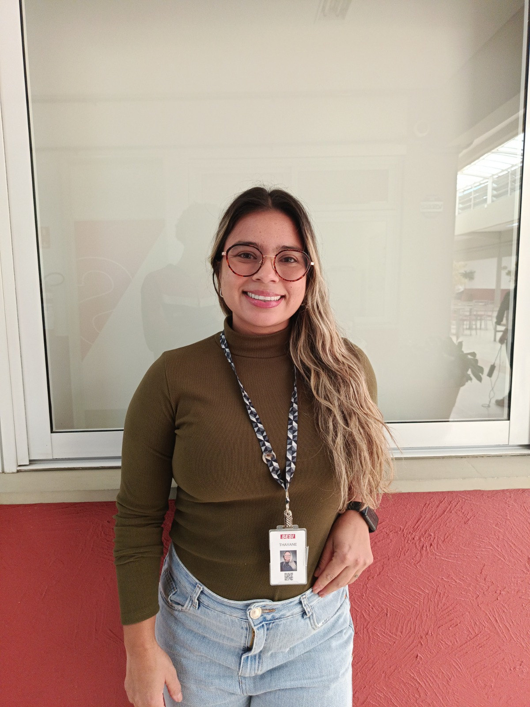
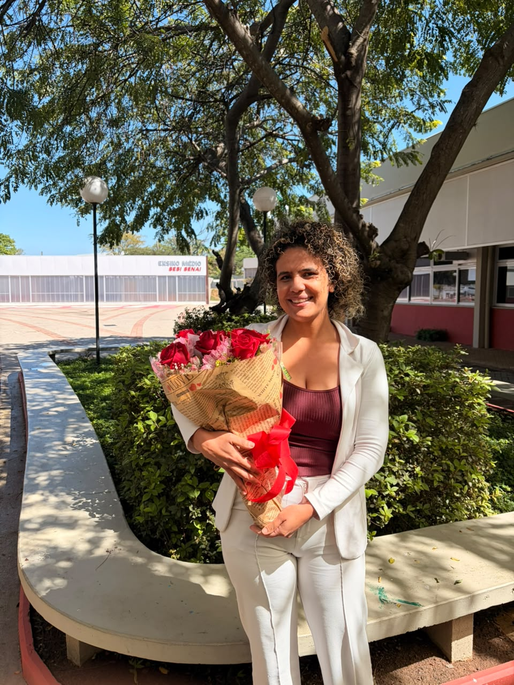

"A importância do meu setor é promover o bem-estar para os alunos e cuidar da comunicação entre escola e família."
Clique para ler a entrevista completa
Eu sempre trabalhei no setor financeiro. Quando me mudei para São Paulo, fiz o processo seletivo do SESI, fui aprovada e hoje trabalho no setor administrativo e secretaria há dois anos e meio. O que eu mais gosto no meu dia a dia é a convivência com os diferentes tipos de pessoas. Entendo que a importância do nosso setor é promover o bem-estar para os alunos e garantir uma boa comunicação entre a família e a escola.
Aqui no SESI, a parte mais desafiadora da minha trajetória foi quando a outra pessoa que trabalhava comigo na secretaria saiu, e eu precisei trabalhar durante seis meses sozinha, acumulando as duas funções. Mesmo com os desafios, trabalhar com educação significa muito para mim, porque conseguimos ver de perto a evolução dos alunos.
Minha maior inspiração de vida sempre foi a minha mãe. Para os estudantes e para toda a comunidade escolar, o conselho que eu deixo é: estudem e corram atrás dos seus sonhos! Diversão é legal e faz parte do trajeto, mas não coloquem isso acima de tudo, para não se arrependerem no futuro.

"Trabalhar com educação significa ajudar a construir um futuro melhor."
Clique para ler a entrevista completa
Sou assistente administrativa e atuo na secretaria do SESI há quase três anos. Minha trajetória até chegar aqui foi bastante desafiadora. No meu trabalho, o que eu mais gosto é o convívio diário com as pessoas, o contato com os alunos, o ambiente escolar e o aprendizado constante. Nosso setor colabora para o funcionamento geral da escola, cuidando desde a parte de compras até a vida escolar dos alunos e os processos administrativos.
Pessoalmente, considero que meu maior desafio na vida foi ser mãe. Na área profissional, tenho duas grandes conquistas: a primeira foi me formar como chef de cozinha em Gastronomia, uma área que amo. Quando Deus mudou meus planos, fui para a área administrativa, gostei muito, busquei estudar e hoje sigo me aperfeiçoando.
Minhas maiores inspirações foram minha mãe e minha avó, mulheres que não tiveram muitos recursos ou oportunidade de estudar, mas lutaram demais para dar o melhor para a nossa família. Para mim, trabalhar com educação significa ajudar a construir um futuro melhor. Meu conselho para os estudantes é que nunca deixem de ser quem vocês são, mantendo sempre o caráter e a essência, e busquem o que sonham, pois tudo é possível com esforço. Nunca desistam daquilo que desejam e procurem sempre aprender mais.